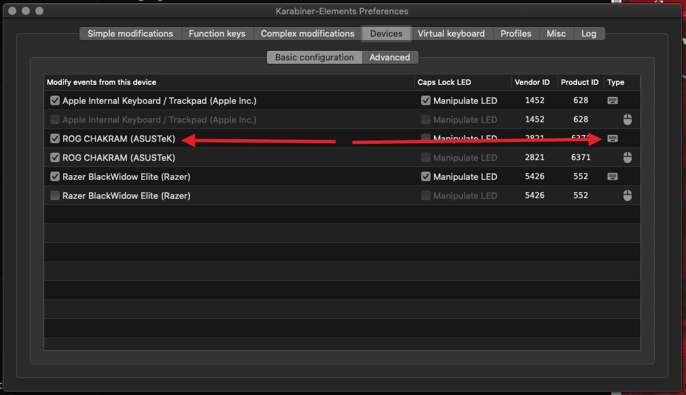

Remap the ROG Chakram Joystick!
Since Asus doesn't have any software to map out the keys in MacOS (despite what you define in Windows, being carried
trough in the mouse internal settings), there was no way to make them have a different behaviour. Set out to redefine
the joystick keys (the side
keys are not recognised, and hadn't had the time to dwelve into that yet).
This configuration is device-specific to the ROG Chakram (vendor_id=2821, product_id=6371), and so far only the
joystick keys, in digital mode, have been mapped.
For the config to work properly, you'll need to enable the device keyboard mode, in Karabiner Elements Preferences ->
Devices:

This is my mapping: